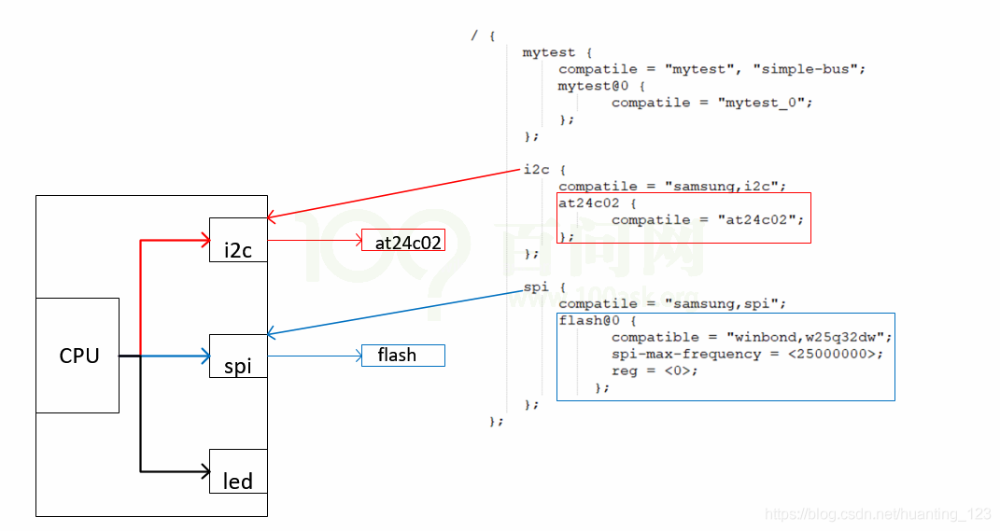
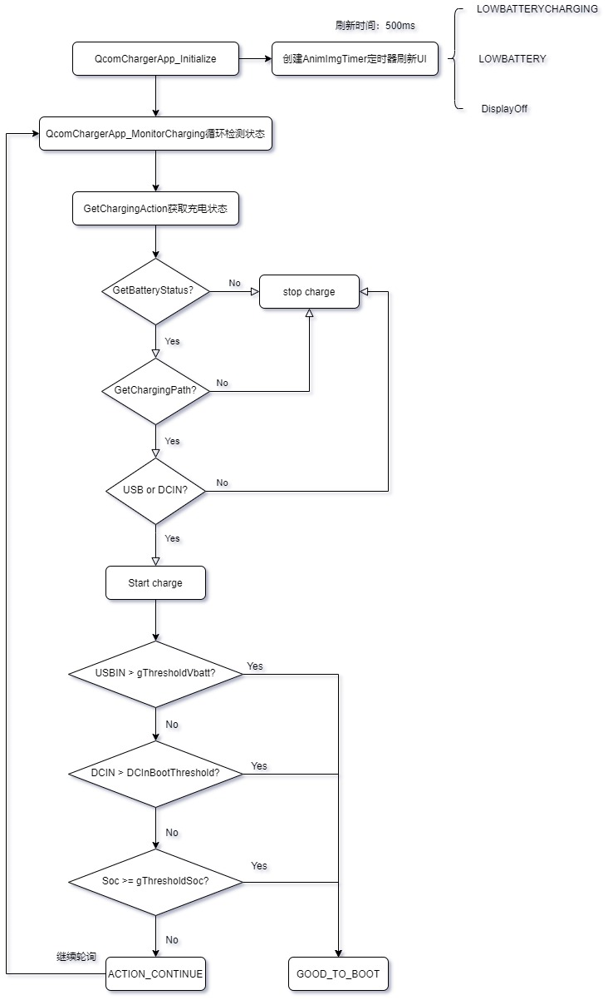
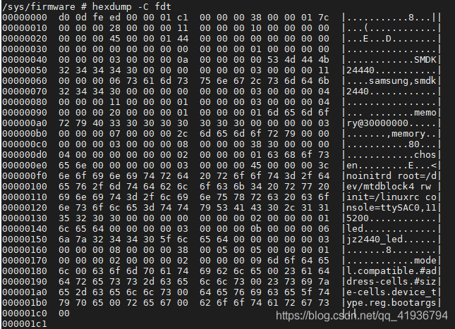
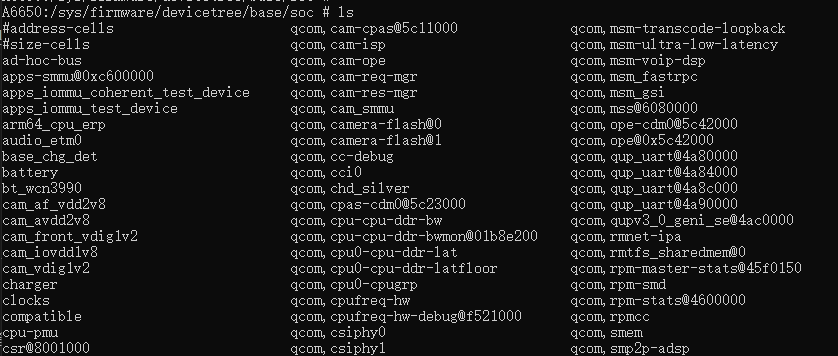
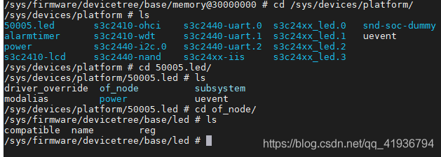

概述
一般把驱动程序分成两部分platform_device跟platform_driver这两部分，
platform_device：描述硬件使用的资源； 设备树dts文件最终在linux内核中会转化成platform_device：
dts -> dtb -> device_node -> platform_device
简介
本文章主要解决下面三个问题：
linux内核如何把device_node转换成platfrom_device? 答：内核函数of_platform_default_populate_init, 遍历device_node树, 生成platform_device
哪些设备树节点可以转换为platform_device? 答： 1、 该节点必须含有compatible属性 2、 根节点的子节点(节点必须含有compatible属性) 3、 含有特殊compatible属性的节点的子节点(子节点必须含有compatible属性): 这些特殊的compatilbe属性为: “simple-bus”,”simple-mfd”,”isa”,”arm,amba-bus “ 根节点是例外的，生成platfrom_device时，即使有compatible属性也不会处理。
cpu可以访问很多外设，spi控制器 I2c控制器，led：

如何在设备树中描述这些硬件？
答：
1、比如以下的节点: /mytest会被转换为platform_device, 因为它兼容”simple-bus”, 它的子节点/mytest/mytest@0 也会被转换为platform_device
2、 /i2c节点一般表示i2c控制器, 它会被转换为platform_device, 在内核中有对应的platform_driver; /i2c/at24c02节点不会被转换为platform_device, 它被如何处理完全由父节点的platform_driver决定, 一般是被创建为一个i2c_client。
3、类似的也有/spi节点, 它一般也是用来表示SPI控制器, 它会被转换为platform_device, 在内核中有对应的platform_driver; /spi/flash@0节点不会被转换为platform_device, 它被如何处理完全由父节点的platform_driver决定, 一般是被创建为一个spi_device。
/ {
mytest {
compatile = "mytest", "simple-bus";
mytest@0 {
compatile = "mytest_0";
};
};
i2c {
compatile = "samsung,i2c";
at24c02 {
compatile = "at24c02";
};
};
spi {
compatile = "samsung,spi";
flash@0 {
compatible = "winbond,w25q32dw";
spi-max-frequency = <25000000>;
reg = <0>;
};
};
};
参考
流程图

在根文件系统中查看设备树
/sys/firmware/fdt存放有原始dtb文件,如下图查看该文件:

/sys/firmware/devicetree以目录结构程现的dtb文件, 根节点对应base目录, 每一个节点对应一个目录, 每一个属性对应一个文件

系统中所有的platform_device,有来自设备树的,也有来有.c文件中注册的,对于来自设备树的platform_device,可以进入 /sys/devices/platform/<设备名>/of_node 查看它的设备树属性
